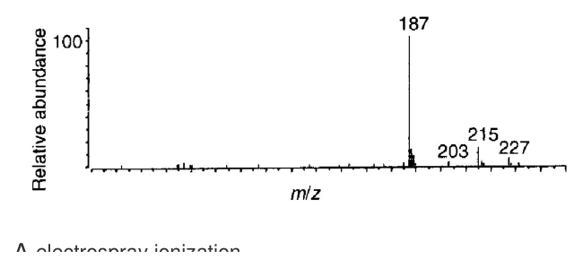

開卷有益 ／
藥師 ／ 藥物分析與生藥學 ／ 107 年第 1 次107 年第 1 次藥師藥物分析與生藥學試題與答案
這一頁是民國 107 年第 1 次藥師藥物分析與生藥學的整份歷屆試題，共 80 題，題目與標準答案出自考選部「國家考試試題及測驗式試題答案」開放資料，其中 76 題附有詳解。以下逐題列出題幹、選項與答案；要計時作答或記錄成績，請用線上練習。
考選部原始場次代碼：107020
線上作答這一科 →
全部 80 題
第 1 題
有一Ka＝10-5的酸性指示劑，其未解離型（HIn）為紅色，而解離型為黃色，當溶液之pH＝8時，呈現何種顏 色？
（A） 黃色（B） 無色（C） 粉紅色（D） 紅色答案：（A）
詳解與考點 正解：酸性指示劑的 Henderson-Hasselbalch 式為 pH = pKa + log([In−]/[HIn])。由 Ka = 10^-5 得 pKa = 5；代入 pH 8，得 [In−]/[HIn] = 10^(8-5) = 10^3。黃色的解離型 In− 約為紅色 HIn 的 1,000 倍，溶液呈黃色，故選 A。
B：兩種型態都具有顏色，且 pH 8 時解離型大量占優勢，不會呈無色。
C：粉紅色代表紅色與黃色混合的過渡外觀，通常出現在 pH 接近 pKa、兩型比例相近時；本題相差 3 個 pH 單位，不符合。
D：紅色的 HIn 在 pH 低於 pKa 時才會占優勢；本題 pH 高於 pKa，方向相反。
本題考點：酸鹼指示劑（acid-base indicator）——先由 Ka 換成 pKa，再以 pH 與 pKa 的差求兩型比例；Henderson-Hasselbalch equation——pH 每高於 pKa 1 個單位，解離型與未解離型的比值增加 10 倍；顏色過渡範圍（transition range）——兩色混合只在兩型濃度相近時出現。
第 2 題
下列何者屬於放射（emission）光譜？
（A） 可見光譜（B） 紫外光光譜（C） 紅外光光譜（D） 拉曼光譜答案：（D）
詳解與考點 正解：拉曼光譜量測試樣受單色光激發後產生的非彈性散射光，訊號來自試樣放出或散射的光子，而非入射光被吸收的減量；在本題的分類中屬 emission 光譜，故選 D。
A：（A）可見光譜在此類基本分類中通常指試樣對可見光的吸收測定，不以散射光的頻率位移作訊號。
B：（B）紫外光譜主要量測電子躍遷造成的紫外光吸收，屬 absorption 光譜。
C：（C）紅外光譜主要量測振動躍遷造成的紅外光吸收，也屬 absorption 光譜。
本題考點：拉曼光譜（Raman spectroscopy）——判斷時看訊號是否為試樣造成的非彈性散射及頻率位移；吸收光譜（absorption spectroscopy）——以透射光減弱量反映試樣吸收；光譜訊號分類——不要只看光的波段，須看儀器量到的是吸收、發射或散射。
第 3 題
下列何種質譜儀的解析度最佳？
（A） 四極柱式質譜儀（quadrupole MS）（B） 飛行時間質譜儀（time of flight MS）（C） 扇形磁場質譜儀（magnetic sector MS）（D） 傅立葉轉換質譜儀（FT ion cyclotron resonance MS）答案：（D）
詳解與考點 正解：解析度以能分開相近質荷比的能力判斷，常以 R = m/Δm 表示。FT ion cyclotron resonance MS 可長時間偵測捕集離子的 cyclotron frequency，再以傅立葉轉換取得質譜，因此四者中解析度最佳，故選 D。
A：（A）quadrupole MS 以穩定軌跡篩選特定 m/z，常見為單位解析度，低於 FT ion cyclotron resonance MS。
B：（B）time of flight MS 依飛行時間分離離子，可具良好解析度，但在此比較中仍不及 FT ion cyclotron resonance MS。
C：（C）magnetic sector MS 利用磁場偏轉分離離子，解析度可高於一般四極柱式儀器，但不是本題四者中最高者。
本題考點：質譜解析度（mass resolution）——以 m/Δm 判斷能否分開相近 m/z，而非只看質量範圍；FT ion cyclotron resonance MS——利用 ion cyclotron frequency 的長暫態量測，可取得極高解析度；質譜分析器比較（mass analyzer comparison）——quadrupole、TOF、magnetic sector 與 FT-ICR 的差異要從分離原理連到解析能力。
第 4 題
下列何種電子轉移最有可能發生在較長之波長且其莫耳吸光度（ε）小於1000？
（A） π→π*（B） σ→σ*（C） n→π*（D） n→σ*答案：（C）
詳解與考點 正解：n→π* 是非鍵結電子躍遷至 π* 軌域，所需能量相對較低，因此容易出現在較長波長；又因躍遷機率低，莫耳吸光度通常小於 1,000，故選 C。
A：（A）π→π* 躍遷通常為允許躍遷，吸收強度較大；即使共軛可使波長變長，也不符合本題以低 ε 為主的組合。
B：（B）σ→σ* 需要打斷最強的 σ 鍵電子穩定性，所需能量最高，故吸收波長最短而非較長。
D：（D）n→σ* 相較 n→π* 需要較高能量，吸收會移向較短波長，不能同時滿足題幹的長波長條件。
本題考點：電子躍遷（electronic transitions）——判斷波長先比較躍遷能量，能隙越小則波長越長；n→π* transition——由孤對電子出發且躍遷機率低，常見弱吸收；莫耳吸光度（molar absorptivity）——ε 小代表吸收帶強度低，需與吸收波長分開判讀。
第 5 題
下列何種儀器之操作溫度最高？
（A） GC（B） inductively coupled plasma（ICP）-MS（C） atomic absorption spectrophotometer（D） ESI-MS答案：（B）
詳解與考點 正解：inductively coupled plasma（ICP）-MS 以高溫電漿使試樣原子化與離子化，其操作溫度遠高於一般色譜進樣、原子吸收原子化或電灑游離條件，故選 B。
A：（A）GC 的進樣口與管柱需要加熱以使分析物揮發，但其操作溫度不及 ICP 電漿。
C：（C）atomic absorption spectrophotometer 的火焰或石墨爐也需高溫原子化，但仍低於 ICP-MS 的電漿來源。
D：（D）ESI-MS 在常壓下以帶電液滴形成離子，屬相對溫和的游離方式，並非最高溫操作。
本題考點：ICP-MS（inductively coupled plasma mass spectrometry）——辨識關鍵是電漿同時完成原子化與離子化，故需極高溫；原子化與游離（atomization/ionization）——比較儀器溫度時先看訊號來源是否必須將元素轉成氣相離子；ESI-MS——以溶液電灑產生離子，不應和高溫電漿混為一談。
第 6 題
下列何者的自旋量子數（spin quantum number）為1/2？
（A） 1H（B） 12C（C） 14N（D） 16O答案：（A）
詳解與考點 正解：^1H 的核自旋量子數 I = 1/2，具有適合核磁共振偵測的非零自旋，故選 A。
B：^12C 的 I = 0，沒有核自旋造成的磁矩，通常不產生 NMR 訊號。
C：^14N 的 I = 1，不是 I = 1/2；其四極性質也常使訊號較寬。
D：^16O 的 I = 0，因此不符合題幹所問的自旋量子數。
本題考點：核自旋量子數（nuclear spin quantum number）——先記常用核種的 I 值，I = 0 的核不適合一般 NMR 偵測；^1H NMR——^1H 的 I = 1/2 且天然豐度高，是最常用的核磁共振核種；四極核（quadrupolar nuclei）——I 大於 1/2 的核常有較快鬆弛與較寬訊號。
第 7 題 待校
有關benzoic acid與cinnamic acid兩化合物之敘述，下列何者錯誤？（benzoic acid ；cinnamic acid ）
（A） 此兩化合物皆含發色團（chromophore）（B） 此兩化合物之電子遷移主要為π→π*（C） 此兩化合物吸光度A（1%, 1 cm）相近（D） 此兩化合物莫耳吸光度（ε）有明顯差異答案：（C）
第 8 題
Phenylephrine在0.1 M NaOH、0.1 M HCl與pH 9.5緩衝液溶液中，於波長292 nm下測得之吸光度分別為1.2、 0.2與0.7，則phenylephrine之pKa值為多少？ （ Ai：離子化型吸光度；Au：非離子化型吸光度）
（A） 8.5（B） 9.0（C） 9.5（D） 10.0答案：（C）
第 9 題
有關普朗克常數（Planck's constant, h）之敘述，下列何者正確？
（A） h＝6.62 × 1027 erg‧s-1（B） 隨波長而改變（C） 與輻射（radiation）光子能量關係式為E = hv（D） 與波長及頻率之關係式為h = vλ答案：（C）
詳解與考點 正解：單一光子的能量由 E = hν 表示，其中 h 為 Planck's constant、ν 為頻率；能量隨頻率成正比，故選 C。
A：Planck's constant 的量綱是能量乘時間，常用 cgs 值為約 6.62 × 10^-27 erg·s；（A）不但少了負指數，時間單位方向也不對。
B：h 是物理常數，不會隨波長改變；改變的是單一光子的能量。
D：νλ = c 才是頻率與波長的關係式，右式得到的是光速 c，不是 Planck's constant。
本題考點：Planck's constant（h）——以 E = hν 連結光子能量與頻率，h 本身為定值；電磁波關係式（c = νλ）——頻率與波長互為反比，須與能量式分開使用；量綱檢查（dimensional analysis）——常數數值即使近似正確，單位或指數錯誤仍不能成立。
第 10 題
使用ODS管柱分析4種蛋白質（I-IV），其親脂性大小為I＞II＞III＞IV，以一般蛋白質之分析條件進行梯度沖 提而得到適當分離，則滯留時間最長者為：
（A） I（B） II（C） III（D） IV答案：（A）
詳解與考點 正解：ODS 管柱的固定相為非極性的 octadecylsilane，屬反相層析。題目已給 I 的親脂性最高，與固定相的疏水作用最強，即使採梯度沖提也會最後洗脫、滯留時間最長，故選 A。
B、C、D：（B）II、（C）III 與（D）IV 的親脂性都依序低於 I，與 ODS 固定相的疏水作用較弱，因而會在 I 之前洗脫；三者不可能是最晚者。
本題考點：反相層析（reversed-phase chromatography）——固定相越非極性，分析物越親脂時通常滯留越久；ODS 管柱（octadecylsilane column）——以 C18 疏水作用判斷洗脫順序，不要套用正相層析的方向；梯度沖提（gradient elution）——可縮短整體分析時間，但在相同條件下不改變本題由親脂性判定的最終順序。
第 11 題
需採取冷凍乾燥法（lyophilization）製備的藥劑，一般不宜以下列何種方法分析？
（A） 氣相層析法（B） 液相層析法（C） 毛細管電泳（D） 薄層層析法答案：（A）
詳解與考點 正解：需要冷凍乾燥的藥劑通常是熱不穩定或不易揮發的成分。GC 必須先使分析物在進樣口與管柱條件下成為穩定的氣相，最不適合用來作為一般分析方法，故選 A。
B：液相層析可將冷凍乾燥製劑復溶後分析，對不揮發或熱敏感成分尤其常用。
C：毛細管電泳可在水溶液或緩衝液中進行分離，並不要求分析物具有氣相揮發性。
D：薄層層析在樣品溶解後即可進行，沒有 GC 那種高溫揮發與氣相傳輸的限制。
本題考點：冷凍乾燥（lyophilization）——通常用來保存熱敏感、含水時不穩定或不易以高溫處理的成分；氣相層析（gas chromatography）——分析物必須能揮發且能承受進樣與分離溫度；分離方法選擇（analytical method selection）——先看樣品的揮發性與熱穩定性，再決定是否適用 GC。
第 12 題
取標示為30 mg pseudoephedrine感冒糖漿，經萃取後將乾燥抽提物溶於100 mL層析動相中，以HPLC分 析，得其波峰面積為1100。用相同層析條件分析濃度為30.00 mg/100 mL的標準品溶液，得波峰面積為 1000。則此感冒糖漿的pseudoephedrine實際含量為標示含量的多少%？
（A） 95（B） 100（C） 105（D） 110答案：（D）
詳解與考點 正解：在相同層析條件下，波峰面積與濃度成正比。面積比為 Asample/Astandard = 1100/1000 = 1.10；感冒糖漿抽提液的濃度 = 1.10 × 30.00 mg/100 mL = 33.00 mg/100 mL。再與標示量比較，實際含量百分比 = 33.00 mg/30 mg × 100% = 110%，故選 D。
A：95% 代表實際含量低於標示量，應對應小於標準品的波峰面積，與 1100 大於 1000 不符。
B：100% 只會在樣品與標準品面積相同時成立，本題面積比為 1.10。
C：105% 對應的面積比應為 1.05，不能由 1100/1000 得出。
本題考點：外部標準法（external standard method）——相同分析條件下以樣品與標準品的波峰面積比換算濃度；HPLC 定量（HPLC quantitation）——先確認訊號與濃度成正比，再帶入標準濃度；標示量百分比（percent of label claim）——最後一步必須以實測量除以標示量再乘 100%，不可停在面積比。
第 13 題
有關液相層析法所使用的內部標準品之敘述，下列何者正確？
（A） 比待測成分的分子量小（B） 與待測成分有相近的滯留時間（C） 不具紫外光或可見光的吸收（D） 能與待測成分發生化學反應答案：（B）
詳解與考點 正解：液相層析的內部標準品應與待測成分有相近的層析行為，以共同補償進樣量與前處理的變異，同時又必須能分離成兩個峰；因此相近的滯留時間最合適，故選 B。
A：內部標準品不以分子量大小選擇，重點是層析行為、穩定性與可偵測性。
C：內部標準品必須在所用偵測器下提供穩定訊號；若採紫外光或可見光偵測，完全沒有吸收就無法作為內標定量。
D：內部標準品不得與待測成分發生化學反應，否則會改變待測物濃度或產生干擾峰。
本題考點：內部標準法（internal standard method）——以待測物與內標的訊號比值校正操作變異，兩者需經歷相近的分析過程；滯留時間（retention time）——應相近以反映相似行為，但仍要分離避免峰重疊；內標選擇（internal standard selection）——穩定、可偵測且不與樣品反應是基本條件。
第 14 題
利用TLC分析類固醇，以矽膠為固定相，二氯甲烷－乙醚－甲醇－水（77：15：8：1.2）為展開液，下列何 者之Rf值最小？
（A） hydrocortisone（B） hydrocortisone acetate（C） hydrocortisone sodium phosphate（D） testosterone propionate答案：（C）
詳解與考點 正解：矽膠是極性固定相，屬正相 TLC；化合物越極性或帶離子性，與矽膠作用越強、移動越少，Rf 越小。hydrocortisone sodium phosphate 帶有高度極性的 phosphate sodium salt，故選 C。
A：hydrocortisone 雖含多個 hydroxyl group 而具極性，但不及帶磷酸鹽的（C）高度極性，Rf 不會最小。
B：hydrocortisone acetate 將部分 hydroxyl group 酯化，親脂性較 hydrocortisone 高，在矽膠上的移動會較遠。
D：testosterone propionate 為酯化的 steroid，整體較親脂，與極性矽膠的作用較弱，Rf 較大。
本題考點：薄層層析（thin-layer chromatography）——在極性矽膠固定相上，極性越高的分析物通常 Rf 越小；正相層析（normal-phase chromatography）——固定相極性高、移動相相對較低極性時，以吸附強弱判定移動距離；鹽類與磷酸酯（phosphate salt）——引入離子性基團會顯著增加極性，是 TLC 誘答最強的比較線索。
第 15 題
在levodopa的非水滴定分析反應中，下列何者為該反應之共軛酸？
（A） perchloric acid（B） sulfuric acid（C） acetic acid（D） hydrochloric acid答案：（C）
第 16 題
為確保卡爾費雪（Karl Fischer）水分測定法的可靠性，最佳的酸鹼度範圍為下列何者？
（A） 4～7（B） 7～10（C） 2～4（D） 8～12答案：（A）
詳解與考點 正解：卡爾費雪水分測定的反應必須維持在適中的弱酸性至近中性條件，可靠的酸鹼度範圍為（A）pH 4～7。此範圍可讓水與 Karl Fischer 試劑的反應順利進行，並降低過酸或過鹼造成副反應及終點不穩的影響，故選 A。
B：pH 7～10 已延伸至鹼性區。鹼性條件會干擾 Karl Fischer 反應系統，使滴定終點的可靠性下降，不能作為最佳範圍。
C：pH 2～4 偏酸，未涵蓋反應最穩定的近中性區域；酸度過高同樣會影響試劑反應與終點判讀。
D：pH 8～12 為明顯鹼性，偏離此法所需的適宜反應環境，副反應風險較高。
本題考點：卡爾費雪水分測定法（Karl Fischer titration）——判斷操作條件時，先看反應系統是否維持在適合水分定量的弱酸性至近中性範圍；滴定終點穩定性（titration endpoint stability）——酸鹼度若促成副反應，終點即不宜視為可靠的含水量讀值。
第 17 題
在20°C 時，玻璃電極的Nernst公式可簡化為下列何者？
（A） E = Ek – 0.0561 × pH（B） E = Ek – 0.0591 × pH（C） E = Ek + 0.0591 × pH（D） E = Ek + 0.0561 × pH答案：（B）
詳解與考點 正解：玻璃電極的 Nernst 斜率由 2.303RT/F 決定；以 20°C = 293.15 K 代入約為 0.0582 V/pH，且電位隨 pH 上升而下降，斜率取負號。四個選項中只有 0.0591 V/pH（25°C 的常用近似值）兼具負斜率與最接近 0.0582 的數值（0.0561 V/pH 約對應 10°C），故選 B。
A：0.0561 V/pH 的斜率比 20°C 的理論值更小，不能由題幹指定的溫度導出。
C：係數雖採常見的 0.0591 V/pH，但正號表示 pH 增加時電位上升；在此慣用寫法中，玻璃電極電位應隨 pH 增加而下降。
D：同時具有偏小的係數與相反的正負號，無法符合題幹所用的簡化式。
本題考點：Nernst equation——先以 2.303RT/F 判斷 pH 電極斜率，再確認電位與 pH 的正負關係；溫度對電極斜率（temperature dependence）——溫度一變斜率即隨之改變，遇到選項與指定溫度不符時須明確辨識近似值的限制。
第 18 題
下列分析方法何者最適合用於測定化合物的pKa值？
（A） 電位滴定法（B） 質譜分析法（C） 核磁共振分析法（D） 毛細管電泳分析法答案：（A）
詳解與考點 正解：化合物的 pKa 可由酸鹼滴定曲線直接取得；在半當量點，弱酸或弱鹼的共軛對濃度相等，pH = pKa。（A）電位滴定法以玻璃電極連續量測 pH，最適合定位此特徵點並求得 pKa，故選 A。
B：質譜分析法量測的是離子的質荷比與碎片訊息，適合分子量及結構輔助鑑定，不能直接由一條滴定曲線讀出 pKa。
C：核磁共振分析法可觀察質子化前後的化學位移改變，但若目標是常規且直接地測定酸解離常數，仍不如電位滴定法。
D：毛細管電泳的遷移率會受 pH 影響，雖可建立模型推估酸鹼解離，卻需要遷移率與 pH 的額外關係資料，不是本題最直接的方法。
本題考點：酸解離常數（pKa）——在半當量點以 pH = pKa 判讀，是酸鹼滴定最直接的操作判準；電位滴定（potentiometric titration）——需要連續的電位或 pH 讀值時，以玻璃電極建立滴定曲線來找等當點與半當量點。
第 19 題
依下列反應式：5Na2C2O4 + 2KMnO4 + 8H2SO4→2MnSO4 + 5Na2SO4 + K2SO4 + 10CO2 + 8H2O，若 0.134 g Na2C2O4（分子量 134）於分析中需消耗 20 mL KMnO4 試劑，則此KMnO4 試劑之當量濃度為何？
（A） 0.02 N（B） 0.05 N（C） 0.1 N（D） 0.2 N答案：（C）
詳解與考點 正解：此題先依氧化還原反應的化學計量換算 KMnO4 的當量數，再以 N = eq/L 求當量濃度。草酸鈉的莫耳數為 n = 0.134 g / (134 g/mol) = 0.001 mol；由 5 Na2C2O4:2 KMnO4，可得 n(KMnO4) = 0.001 mol × 2/5 = 0.0004 mol。酸性條件下 1 mol KMnO4 接受 5 mol e−，故其當量數為 0.0004 mol × 5 eq/mol = 0.002 eq。體積換算為 20 mL × 1 L/1000 mL = 0.020 L，故 N = 0.002 eq / 0.020 L = 0.1 eq/L =（C）0.1 N，故選 C。
A：0.02 是 0.0004 mol / 0.020 L 得到的莫耳濃度 0.02 mol/L，將 molarity 直接當作 normality，漏掉了酸性 KMnO4 的 5 eq/mol。
B：0.05 N 相當於把 0.001 mol 草酸鈉誤作 0.001 eq 後再除以 0.020 L；草酸根在此氧化反應的電子轉移不能只算 1 eq/mol。
D：0.2 N 代表 20 mL 中須有 0.004 eq 的 KMnO4，是反應計量所得 0.002 eq 的兩倍。
本題考點：氧化還原當量（redox equivalent）——先依半反應的電子轉移數把 mol 轉成 eq，不能把莫耳濃度直接稱為當量濃度；當量濃度（normality）——以 N = eq/L 計算，體積進式前必須先把 mL 換成 L；氧化還原化學計量（redox stoichiometry）——由平衡反應式的係數先求反應物莫耳比，再進入當量換算。
第 20 題
依照中華藥典第七版所記載的檢測方法，下列何種維生素的含量測定含以鈀進行催化性氫化反應？
（A） 維生素A（B） 維生素D（C） 維生素E（D） 維生素B1答案：（A）
詳解與考點 正解：依題幹限定的中華藥典第七版，含以 palladium 進行催化性氫化反應的含量測定為（A）維生素 A。判準在於分子有沒有可被催化氫化的共軛多烯鏈：維生素 A（retinol）側鏈的共軛多烯經鈀催化氫化後雙鍵飽和、特徵紫外吸收隨之消失，氫化前後的吸光差即為扣除無關吸收後的定量依據，故選 A。
B：維生素 D 雖同為脂溶性維生素、也帶共軛多烯發色團，但鈀催化氫化—吸光差是配合維生素 A 紫外吸收法設計的步驟，該版維生素 D 的含量測定並未納入這道氫化程序，不能只因同屬脂溶性維生素就把它移作維生素 D 的辨識特徵。
C：維生素 E 的結構與脂溶性也容易造成聯想，但不能據此把（A）維生素 A 的指定反應步驟移作維生素 E 的檢測法。
D：維生素 B1 為水溶性維生素，分子中沒有可供鈀催化氫化的共軛多烯鏈，與題幹所述的鈀催化性氫化含量測定無關。
本題考點：藥典含量測定（pharmacopoeial assay）——遇到版本限定的題目，應以該版方法的特定反應步驟辨識品項；催化性氫化（catalytic hydrogenation）——判斷分析法時，要把催化劑與反應步驟當成方法指紋，而非只按維生素的溶解性分類。
第 21 題
下列何者服用過量會造成藍嬰症（嬰幼兒的變性紅血素血症），其鑑別可藉由加入硫酸與金屬銅經加熱產生 棕紅色氣體而得知？
（A） 磷酸鹽（B） 硝酸鹽（C） 鐵鹽（D） 鈣鹽答案：（B）
詳解與考點 正解：藍嬰症的關鍵是 methemoglobin 增加，使血紅素失去正常攜氧能力；攝入過量的（B）硝酸鹽可經還原形成 nitrite，進而氧化血紅素中的鐵。硝酸鹽在硫酸與金屬銅加熱的鑑別反應中會生成棕紅色氮氧化物氣體，因此對應（B）硝酸鹽，故選 B。
A：磷酸鹽不具有硝酸根的氮氧化還原行為，不能以題幹的銅與硫酸加熱反應產生棕紅色氣體，也不是此藍嬰症的典型原因。
C：鐵鹽可造成其他型態的中毒或鐵代謝問題，但不具（B）硝酸鹽經還原形成 nitrite 的路徑，與題幹鑑別反應不符。
D：鈣鹽的過量效應主要涉及鈣平衡，沒有硝酸根可產生題述的氮氧化物氣體。
本題考點：變性紅血素血症（methemoglobinemia）——見嬰幼兒發紺時，須連結 nitrite 對血紅素鐵的氧化作用；硝酸鹽鑑別（nitrate identification）——酸性下以金屬銅加熱若出現棕紅色氮氧化物，判斷重點在硝酸根的還原反應。
第 22 題
下列何者不是造成揮發油的比重非定值的原因？
（A） 純化與製備方法（B） 儲存條件（C） 含非揮發性成分（D） 來源植物的熟成度答案：（C）
詳解與考點 正解：揮發油的比重會隨其揮發性成分組成改變，而（C）含非揮發性成分不是揮發油本身比重非定值的固有原因；它表示樣品純度受非揮發性雜質影響，不能與來源、製備或保存造成的組成變動並列，故選 C。
A：純化與製備方法會改變被保留或損失的揮發性成分比例，因此可使不同批次的揮發油比重不同。
B：儲存期間若有揮發、氧化或其他成分變化，樣品組成會改變，比重也可能隨之改變。
D：來源植物的熟成度會影響各揮發性成分的生合成比例，是天然產物比重不固定的來源之一。
本題考點：揮發油（volatile oil）——判斷物性差異時，先看揮發性組成是否因來源、製備或保存而改變；比重（specific gravity）——它反映樣品整體組成，須區分天然組成變異與非揮發性雜質造成的純度問題。
第 23 題
下列何者是動物脂肪的碘價範圍？
（A） 150～180（B） ＜90（C） 120～150（D） 90～120答案：（B）
詳解與考點 正解：碘價用來反映油脂中碳碳雙鍵的不飽和程度；一般動物脂肪的飽和脂肪酸比例較高，能加成的碘較少，碘價通常為（B）＜90，故選 B。
A：150～180 代表很高的不飽和程度，較符合含多量雙鍵的油脂，不能作為一般動物脂肪的範圍。
C：120～150 仍顯示較多可加成的雙鍵，與題幹所稱一般動物脂肪的低碘價特徵不合。
D：90～120 的不飽和程度高於一般動物脂肪所對應的範圍，不能選為其典型碘價。
本題考點：碘價（iodine value）——碘價愈高，表示每單位油脂可與碘加成的雙鍵愈多；油脂不飽和度（degree of unsaturation）——比較動植物脂肪時，先以碳碳雙鍵多寡推估碘價，再判斷數值高低。
第 24 題
比旋光度常應用於具光學活性藥物的鑑別，下列何者不具有旋光度？
（A） 阿斯匹靈（aspirin）（B） 維生素C（ascorbic acid）（C） 樟腦（camphor）（D） 阿卡波糖（acarbose）答案：（A）
詳解與考點 正解：比旋光度必須來自分子的手性；（A）aspirin 沒有立體中心，為非手性分子，故不具有旋光度。其餘選項都具有可造成光學活性的立體結構，故選 A。
B：ascorbic acid 具有多個手性中心，能使平面偏振光旋轉，可用旋光性作為鑑別資訊。
C：camphor 的立體骨架具有手性，存在具旋光性的立體異構形式，不能視為無旋光度。
D：acarbose 含有多個糖類衍生的手性中心，具有顯著的光學活性。
本題考點：旋光度（optical rotation）——先判斷分子是否具手性，沒有手性中心或其他手性來源時不會有淨旋光；比旋光度（specific rotation）——用於具光學活性藥物的鑑別時，須在規定溶劑、溫度與濃度下比較。
第 25 題
附圖為psoralen（MW = 186）的氣相層析－質譜分析結果，其採用的離子化（ionization）方法為：

（A） electrospray ionization（B） electron impact ionization（C） positive ion chemical ionization（D） negative ion chemical ionization答案：（C）
第 26 題
下列方法何者無法用於分析錠劑中藥品的多形性（polymorphs）？
（A） Raman光譜（B） χ-ray繞射（C） 固態核磁共振光譜（D） LC-MS-MS答案：（D）
詳解與考點 正解：多形性是同一化學物質在固態晶格、分子排列或結晶型態上的差異，必須以保留固態結構資訊的方法分析。（D）LC-MS-MS 通常先將樣品溶解並量測離子的質荷比與碎片，會失去晶型差異，因此無法作為錠劑多形性的分析方法，故選 D。
A：Raman 光譜可量測固態分子的振動訊號，不同晶型會有可辨識的光譜差異，可用於多形性分析。
B：X-ray diffraction 直接反映晶格的繞射圖樣，是鑑別不同晶型的核心方法。
C：固態核磁共振光譜保留固態下的局部化學環境資訊，可分辨不同多形體。
本題考點：藥物多形性（polymorphism）——要分析晶型時，選擇能保留或讀出固態排列資訊的技術；液相串聯質譜（LC-MS-MS）——適合溶液中成分的質荷比與碎片分析，不能據此辨認原始固態晶格。
第 27 題
有關原子發散光譜測定法（atomic emission spectrophotometry, AES）和原子吸收光譜測定法（atomic absorption spectrophotometry, AAS）之敘述，下列何者錯誤？
（A） AAS的靈敏度較AES高（B） AES的應用範圍較小（C） 兩者皆需要提供高溫的火焰來源（D） 血液透析液中鈣、鎂的含量較適合以AES來分析答案：（D）
詳解與考點 正解：在本題採傳統原子光譜比較的脈絡下，AAS 對多數元素的靈敏度通常高於 AES；血液透析液中的 Ca、Mg 因此較適合以 AAS 做常規定量。（D）反而說較適合以 AES 分析，為錯誤敘述，故選 D。
A：AAS 量測基態原子對特徵光的吸收，通常具有較高靈敏度，這正是其在微量元素定量上的優勢。
B：AES 須使待測元素在高溫下有效激發並量測其發射光，適用元素範圍相對受限，敘述正確。
C：就傳統火焰型的 AES 與 AAS 而言，兩者都以高溫火焰產生原子蒸氣；差別在 AES 量測激發原子的發射，AAS 量測原子對外來光的吸收。
本題考點：原子吸收光譜（atomic absorption spectrophotometry, AAS）——需要較高靈敏度的元素定量時，優先判斷吸收法是否較適用；原子發射光譜（atomic emission spectrophotometry, AES）——先使原子激發再量測其發射光，與 AAS 的訊號來源不可混淆；元素分析方法選擇（elemental analysis）——比較方法時需同時看待測元素、靈敏度與儀器的原子化條件。
第 28 題
下列何者非核磁共振光譜法於藥物分析之應用項目？
（A） 可用於原料藥之結構鑑定（B） 可用於非鏡像異構不純物測定（C） 可用於藥物的分子量測定（D） 可用於藥物中的非破壞性定量分析答案：（C）
詳解與考點 正解：核磁共振光譜提供的是核周圍化學環境、耦合與積分資訊，主要用於結構與組成分析；藥物分子量的直接測定通常以質譜的質荷比為依據。因此（C）不是核磁共振光譜於藥物分析的典型應用，故選 C。
A：核磁共振可由化學位移、耦合常數與積分資訊建立原料藥的結構，是其主要用途之一。
B：非鏡像異構不純物在化學環境不同時可呈現不同訊號，核磁共振可用於其鑑別與定量分析。
D：qNMR 可利用訊號積分與已知標準物比較，在不破壞樣品的情況下進行定量。
本題考點：核磁共振光譜（nuclear magnetic resonance, NMR）——需要結構、化學環境或非破壞性定量資料時選用 NMR；質譜（mass spectrometry）——需要分子量時以離子的質荷比判讀，不能把 NMR 的結構訊號當作直接分子量測定。
第 29 題
下列那個苯環上取代基團屬助色團（auxochrome）？
（A） -CO2C2H5（B） -CHO（C） -CO2H（D） -OH答案：（D）
詳解與考點 正解：助色團是可藉孤對電子與發色系統共軛、改變吸收波長或強度的取代基；（D）-OH 的氧原子具有孤對電子，可與苯環的 π 系統作用，因此屬 auxochrome，故選 D。
A：（A）-CO2C2H5 含有羰基，吸收特徵主要來自 C=O 發色團，不是以孤對電子增強既有苯環發色團的典型助色團。
B：（B）-CHO 的關鍵吸收單元為羰基，是發色團的例子，而非本題所問的助色團。
C：（C）-CO2H 同樣以羰基構成主要發色結構，不能因含氧就歸為助色團。
本題考點：助色團（auxochrome）——含孤對電子的取代基若能與發色系統共軛，可改變吸收位置或強度；發色團（chromophore）——先找直接參與電子躍遷的 π 或 n 電子系統，再與只調節其吸收的助色團區分。
第 30 題
有關procaine [H2N-C6H4-COOCH2CH2N(C2H5)2] 之吸光敘述，下列何者錯誤？
（A） 胺基（NH2）為發色團（chromophore）（B） 溶於0.1M HCl之εmax小於溶於0.1 M NaOH之εmax（C） 溶於0.1M HCl之λmax小於溶於0.1 M NaOH之λmax（D） εmax主要與π→π*電子遷移有關答案：（A）
詳解與考點 正解：procaine 的苯環共軛系統才是主要發色團；（A）胺基 NH2 以孤對電子調節苯環的電子系統，屬 auxochrome 而非 chromophore，故該敘述錯誤，故選 A。
B：在 0.1 M HCl 中，胺基被質子化後孤對電子不易與苯環共軛，吸收強度下降，因此 εmax 小於在 0.1 M NaOH 中的情形。
C：胺基質子化會減弱共軛並增大電子躍遷能隙，造成較短波長的吸收；故 0.1 M HCl 中的 λmax 小於 0.1 M NaOH 中的 λmax。
D：苯環共軛系統的強吸收主要涉及 π→π* 電子躍遷，εmax 與此允許躍遷有密切關係。
本題考點：發色團與助色團（chromophore and auxochrome）——苯環共軛系統負責主要吸收，含孤對電子的胺基則以共軛調節吸收；酸鹼對 UV 吸收的影響（pH effect on UV absorption）——胺基被質子化後失去孤對電子供應能力，通常使吸收強度下降並往短波長移動。
第 31 題
下列苯環上取代基那些會有增強螢光效果？①OH ②NH2 ③NH3+ ④COOH ⑤NO2 ⑥NHMe ⑦Br
（A） ①④⑥（B） ①②⑥（C） ③⑤⑦（D） ②④⑤答案：（B）
詳解與考點 正解：能增強苯環螢光的取代基通常可由孤對電子供應共軛系統，且不強烈促進非輻射失活。①OH、②NH2、⑥NHMe 均符合此條件，故正確組合為（B）①②⑥，故選 B。
A：①OH 與⑥NHMe 可增強螢光，但④COOH 含羰基且不屬此一增強組合；同時遺漏了可供電子的②NH2。
C：③NH3+ 因質子化而失去可供應的孤對電子，⑤NO2 容易造成淬熄，⑦Br 則有重原子效應促進非輻射途徑，三者皆非增強螢光的取代基。
D：②NH2 可增強螢光，但④COOH 與⑤NO2 不具同樣效果；尤其 NO2 是常見的螢光淬熄基。
本題考點：螢光增強取代基（fluorescence-enhancing substituents）——未質子化的 OH、NH2、N-alkyl amino 若可供應孤對電子並延伸共軛，通常有利螢光；螢光淬熄（fluorescence quenching）——強吸電子基、質子化胺基或重原子效應會增加非輻射失活，判斷時應優先排除。
第 32 題
下列氣相層析法所用檢測器中，何者對於化學結構的解析最佳？
（A） flame ionization detector（B） thermal conductivity detector（C） radiochemical detector（D） Fourier transform infrared detector答案：（D）
詳解與考點 正解：若目標是由氣相層析檢測器取得化學結構資訊，（D）Fourier transform infrared detector 可提供化合物的紅外線吸收光譜，能辨識官能基與結構特徵，因此解析化學結構的能力最佳，故選 D。
A：flame ionization detector 對多數有機化合物反應靈敏，主要提供訊號強度與定量資訊，沒有足以判讀官能基的結構光譜。
B：thermal conductivity detector 是通用型檢測器，以熱傳導差異產生訊號，可偵測成分但不能提供詳細結構解析。
C：radiochemical detector 對放射性標記化合物具選擇性，辨識的是放射性訊號而非化合物的完整結構。
本題考點：GC-FTIR（gas chromatography-Fourier transform infrared spectroscopy）——需要從層析峰取得官能基與結構線索時，選能輸出紅外線光譜的偵測方式；氣相層析檢測器（gas chromatography detector）——定量靈敏度、通用性與結構資訊是不同能力，不能由能偵測峰就推論可解析結構。
第 33 題
下列有關Van Deemter equation，HETP＝A + B/µ + Cµ之敘述，何者錯誤﹖
（A） A項為eddy diffusion與粒徑大小有關（B） B項為molecular diffusion為分子在動相中的擴散速率（C） C項為resistance of mass transfer與固定相之薄膜厚度有關（D） 一般HETP值愈大，層析效率愈佳答案：（D）
詳解與考點 正解：HETP 是每一理論板相當的柱長，與理論板數的關係為 N = L/H；因此 HETP 愈小，在相同柱長下理論板數愈多、層析效率愈佳。（D）把方向顛倒，為錯誤敘述，故選 D。
A：A 項代表 eddy diffusion，與填料粒徑及填裝均勻度有關，粒徑分布不均會增加不同流路造成的帶展寬。
B：B/μ 項代表分子在動相中的 longitudinal molecular diffusion；流速愈慢，溶質在柱內縱向擴散的時間愈長。
C：Cμ 項代表 resistance of mass transfer，固定相薄膜愈厚時溶質達成相間平衡愈慢，質傳阻力會增大。
本題考點：Van Deemter equation——以 HETP = A + B/μ + Cμ 分辨渦流擴散、縱向擴散與質傳阻力對柱效的影響；理論板數（theoretical plate number）——在柱長固定時 N = L/H，故低 HETP 才代表高效率；最佳線速度（optimal linear velocity）——選擇流速時要平衡低流速的 B/μ 與高流速的 Cμ。
第 34 題
①Acetonitrile ②water ③tetrahydrofuran ④methanol用於逆相液相層析法，其溶劑強度（solvent strength）由大至小順序為何？
（A） ①③④②（B） ②①④③（C） ③①④②（D） ④①②③答案：（C）
詳解與考點 正解：逆相液相層析使用非極性固定相，流動相溶劑強度愈大，愈能把疏水性分析物自固定相洗脫。題列溶劑由大至小依序為 tetrahydrofuran、acetonitrile、methanol、water，即（C）③①④②，故選 C。
A：①③④② 把 acetonitrile 排在 tetrahydrofuran 之前，顛倒了兩者在逆相系統中的相對溶劑強度。
B：②①④③ 把 water 排為最強，但 water 在逆相液相層析中洗脫力最弱，順序明顯不合。
D：④①②③ 不僅未將 tetrahydrofuran 排在最前，也把 water 排在 tetrahydrofuran 之前，與逆相溶劑強度相反。
本題考點：逆相液相層析（reversed-phase liquid chromatography）——固定相愈非極性，流動相愈具洗脫力時保留時間愈短；溶劑強度（solvent strength）——比較常用有機改質劑時，先記 tetrahydrofuran > acetonitrile > methanol > water，再由強到弱排列。
第 35 題
下列有關層析分離技術之敘述，何者錯誤？
（A） K' 為capacity factor，一般為1～10較適當（B） α為selectivity factor，可定義為K2'/ K1'（C） Rs為resolution解析度，Rs＝1.0表示完全分離（D） N表示理論板數答案：（C）
詳解與考點 正解：Rs = 1.0 只表示兩個峰已有一定分離，仍會有明顯重疊；通常須接近 Rs = 1.5 才能達到基線分離。因此（C）宣稱 Rs = 1.0 表示完全分離，為錯誤敘述，故選 C。
A：K′ 是 capacity factor，實務上約 1～10 可兼顧保留與分析時間，是合適的操作範圍。
B：selectivity factor α 以較晚洗脫成分的 K2′ 除以較早洗脫成分的 K1′ 定義，故 α = K2′/K1′，且通常大於 1。
D：N 為理論板數，用來表示層析柱效率；N 愈大，峰形通常愈窄、分離潛力愈好。
本題考點：解析度（resolution, Rs）——判斷是否基線分離時，Rs = 1.0 不足，通常以約 1.5 作為完全分離的門檻；容量因子（capacity factor, K′）——K′ 反映溶質在固定相與流動相間的保留程度，過小或過大都不利實務分析；選擇性因子（selectivity factor, α）——先比較兩峰的 K′ 比值，提升 α 才能有效拉開相近成分。
第 36 題
有關串聯式質譜儀（MS/MS）的敘述，下列何者錯誤？
（A） 可補足電灑法分子碎裂資訊偏少的不足（B） 可提高分析靈敏度（C） 可增加化合物結構資訊（D） 撞擊誘導裂解法（collision induced dissociation）之再現性非常好，其質譜圖可供資料庫之建置答案：（D）
詳解與考點 正解：串聯式質譜儀先選出前驅離子，再使其碎裂並量測產物離子；因此可補足電灑游離法碎片偏少的限制，也能增加結構鑑別資訊。CID 的產物離子分布會受碰撞能量、碰撞氣體與儀器條件影響，跨條件的再現性並非「非常好」，不宜把其譜圖直接視為可通用的資料庫建置資料，故選 D。
A：電灑游離（electrospray ionization）屬溫和游離法，常得到完整分子離子而碎裂資訊較少；以 MS/MS 對選定離子再進行碎裂，正可補上這項結構資訊。
B：選擇特定的前驅離子與產物離子組合，可降低其他離子的干擾；在目標分析中，這能提高檢出與定量的靈敏度。
C：產物離子的質荷比與碎裂途徑可反映官能基、次結構或鍵結位置，因此 MS/MS 比單一質譜提供更多化合物結構資訊。
本題考點：串聯式質譜（tandem mass spectrometry, MS/MS）——先以一級質譜選離子、再以二級質譜讀碎片，適合結構鑑別與複雜基質定量；撞擊誘導裂解（collision induced dissociation, CID）——判讀碎片時須連同碰撞條件考量，不能把不同儀器條件下的譜圖當成完全等價。
第 37 題
當使用BPX-5管柱分析薄荷油時，得到menthone與menthol的I值（I-value）分別為1170與1192，下列何種 管柱對於增加兩化合物I值差異的效果最好？
（A） Carbowax（B） squalane（C） Silicone OV-1（D） Silicone OV-17答案：（A）
詳解與考點 正解：menthone 與 menthol 的關鍵結構差異是羰基與羥基；要放大兩者的保留指數差異，應使用能明顯分辨極性作用的固定相。Carbowax 為極性固定相，對 menthol 的羥基相關作用較敏感，最能拉開兩化合物的保留行為，故選 A。
B：squalane 為非極性固定相，主要依色散力分離；它不會特別放大羥基與羰基造成的極性差異。
C：Silicone OV-1 也是低極性矽氧烷固定相，對兩者的差異辨識較接近沸點與疏水性，分離增益有限。
D：Silicone OV-17 的極性高於非極性矽氧烷相，但對此組合的極性辨識仍不及 Carbowax 明顯；分辨關鍵在固定相能否強化羥基與羰基的作用差。
本題考點：保留指數（retention index, I-value）——比較同一化合物在不同固定相的保留行為時，先看固定相極性能否放大待測物的官能基差異；氣相層析固定相選擇（gas chromatography stationary-phase selection）——極性官能基不同的化合物，通常以較極性的固定相增加選擇性。
第 38 題
使用毛細管膠束電動層析法（MEKC）分析三中性化合物（A，log P 3.0；B，log P 1.5；C，log P 0.5）， 當背景電解質之pH＝8且在正電壓模式下，此三化合物之遷移順序快慢為下列何者？
（A） ABC（B） BCA（C） CBA（D） CAB答案：（C）
詳解與考點 正解：在 MEKC 中，中性化合物靠電滲流與其在膠束、水相間的分配而遷移。於 pH 8 的正電壓模式下，log P 越低者越少進入疏水膠束、越接近較快的電滲流；因此 C（log P 0.5）最快、B（log P 1.5）次之、A（log P 3.0）最慢，選項（C）的 CBA 順序正確，故選 C。
A：ABC 把最疏水的 A 排為最快，忽略 A 最容易分配進膠束、滯留時間最長的事實。
B：BCA 雖未把 A 排在最前，仍把 B 排在親水性更高的 C 之前；中性分析物中，較少進入膠束的 C 應先遷移。
D：CAB 將 A 排在 B 之前，與疏水性越高、膠束保留越久的關係相反。
本題考點：膠束電動層析（micellar electrokinetic chromatography, MEKC）——中性分子以水相與膠束間的分配決定遷移，不是靠本身電荷；辛醇／水分配係數（log P）——在疏水膠束系統中，log P 較高通常代表膠束保留較強、遷移較慢。
第 39 題
以高效液相層析法分析生物檢體中的乳酸（CH3CH(OH)COOH）濃度時，下列何種化合物為最適當之內部 標準品？
（A） 丙醛（C2H5CHO）（B） 丙酸（C2H5COOH）（C） 丁酸（C3H7COOH）（D） 甲基乙二醛（CH3COCHO）答案：（B）
詳解與考點 正解：內部標準品應與乳酸在萃取、分離與偵測時有相近行為，同時又能與乳酸分開定量。乳酸是小分子羧酸；在列出的候選物中，（B）丙酸同樣具有羧酸官能基，碳數與極性最接近，較能補償前處理與注射造成的變異，故選 B。
A：丙醛是醛類而非羧酸，酸鹼性與保留行為都與乳酸差異較大，不能穩定模擬乳酸的分析損失。
C：丁酸雖也有羧酸官能基，但比乳酸多一個亞甲基且缺少羥基，疏水性與層析保留差異較丙酸更大。
D：甲基乙二醛含兩個羰基，反應性與官能基型態均不同於乳酸，作為內部標準品的相似性不足。
本題考點：內部標準法（internal standard method）——選擇與待測物理化性質及前處理行為相近、但可分離定量的化合物；高效液相層析保留（high-performance liquid chromatography retention）——比較候選內標時，優先比對官能基、酸鹼性與疏水性，而非只看分子量接近。
第 40 題
下列何者與水之互溶性最佳？
（A） tetrahydrofuran（B） ethyl acetate（C） chloroform（D） diethyl ether答案：（A）
詳解與考點 正解：與水的互溶性要同時看分子極性與接受氫鍵的能力。tetrahydrofuran 為含氧雜環醚，極性足以與水形成有利作用，四種溶劑中與水的相容性最佳，故選 A。
B：ethyl acetate 雖有酯基可接受氫鍵，但疏水烴基比例較高，只能有限度溶於水，不能與水完全互溶。
C：chloroform 的極性與氫鍵作用能力都不足以克服其疏水性，在水中僅有很低的溶解度。
D：diethyl ether 有一個醚氧，但兩側乙基使整體疏水性較高，與水僅部分互溶。
本題考點：溶劑互溶性（solvent miscibility）——先比較極性與氫鍵作用，再看非極性碳鏈比例；醚類溶劑（ethers）——含氧可增加親水性，但碳鏈愈長時，互溶性仍會被疏水部分拉低。
第 41 題
下列何種植物的種子所含的木質素類（lignan）成分是一種除蟲菊殺蟲劑之增效劑（synergistic effect）？
（A） Glycine soja（B） Olea europaea（C） Sesamum indicum（D） Zea mays答案：（C）
詳解與考點 正解：白芝麻（Sesamum indicum）種子含芝麻木脂素，例如 sesamin 與 sesamolin；此類成分可增強除蟲菊殺蟲劑的效果，屬經典的增效劑來源，故選 C。
A：Glycine soja 的主要辨識成分與用途不在於提供除蟲菊增效用的芝麻木脂素，不能因同為種子就視為相同來源。
B：Olea europaea 的代表性成分與藥用部位另有其特色，並非教材中所指除蟲菊殺蟲劑增效木脂素的種子來源。
D：Zea mays 以澱粉、脂質等成分為主要辨識方向，與芝麻種子木脂素的增效作用不同。
本題考點：木脂素（lignans）——辨認植物來源時要把特徵性次級代謝物連回其藥理用途；除蟲菊增效劑（pyrethrum synergists）——芝麻木脂素可提升除蟲菊成分的殺蟲效果，不能只按植物部位或是否為油料種子判斷。
第 42 題
檳榔之醫藥用途為何？
（A） 驅絛蟲（B） 戒菸（C） 止嘔吐（D） 抗暈眩答案：（A）
詳解與考點 正解：檳榔的傳統生藥用途與其所含 arecoline 的驅蟲作用相關，教材中列為用於驅除腸道絛蟲的生藥，故選 A。
B：戒菸並非檳榔在生藥學中的標準醫藥用途；檳榔本身具有成癮與健康風險，不能把咀嚼習慣當作戒菸療法。
C：止嘔吐常需考慮嘔吐中樞或胃腸道機轉，檳榔的傳統用途不屬此類。
D：抗暈眩不是檳榔的經典驅蟲用途，與本題所考的生藥適應症不符。
本題考點：檳榔（Areca catechu）——看到檳榔的傳統醫藥用途時，應連結到驅蟲而非神經症狀處置；生藥適應症辨識（crude-drug indications）——依特徵成分與教材分類配對用途，不能從日常使用情境推論治療效果。
第 43 題
以真核細胞製備重組蛋白藥物，可進行下列蛋白質轉譯（translation）後的何種修飾？
（A） 在蛋白質的N-terminal接上N-formylmethionine（B） 在asparagine上進行O-glycosylation（C） 在threonine上進行N-glycosylation（D） 進行disulfide folding答案：（D）
詳解與考點 正解：真核表現系統具有內質網與分泌路徑，可協助重組蛋白形成正確的二硫鍵。二硫鍵折疊（disulfide folding）是重要的轉譯後修飾與品質控制步驟，故選 D。
A：N-formylmethionine 是原核生物翻譯起始常見的 N 端特徵，並非真核細胞製備蛋白的典型轉譯後修飾。
B：asparagine 的醣基化型態是 N-glycosylation；O-glycosylation 的受體通常是 serine 或 threonine。
C：threonine 可進行 O-glycosylation，但 N-glycosylation 是接在 asparagine 上，兩種修飾位置不能互換。
本題考點：真核蛋白表現（eukaryotic protein expression）——需要複雜折疊或分泌路徑修飾的重組蛋白，優先考慮真核系統；N-醣基化與 O-醣基化（N-glycosylation and O-glycosylation）——N 型看 asparagine，O 型看 serine 或 threonine；二硫鍵折疊（disulfide folding）——分泌蛋白的構形與活性判讀，要先確認二硫鍵是否能正確形成。
第 44 題
下列何者不是利用DNA重組技術製造的生物製劑？
（A） Humulin（B） Roferon-A（C） Nutrophin（D） human chorionic gonadotropin答案：（D）
詳解與考點 正解：本題按教材列舉的製劑來源分類。Humulin、Roferon-A 與 Nutropin 都是利用 DNA 重組技術製造的蛋白質藥物；human chorionic gonadotropin 在此分類中是由懷孕婦女尿液分離純化的生物製劑，而非重組製劑，故選 D。
A：Humulin 是重組人類胰島素；其製備是在宿主細胞表現人類胰島素相關基因，符合 DNA 重組技術。
B：Roferon-A 為重組 interferon alfa 製劑，重點在以重組宿主表現人類干擾素，而不是直接自人體組織萃取。
C：Nutropin（題面拼作 Nutrophin）為重組人生長激素製劑，屬重組蛋白藥物。
本題考點：重組蛋白藥物（recombinant protein therapeutics）——判斷製備技術時看產品是否由帶有人類基因的宿主細胞表現；尿液來源生物製劑（urine-derived biologics）——題目問製劑來源時，不能只因該蛋白理論上可被重組表現，就忽略教材所列的實際來源。
第 45 題
下列何者歸屬於生藥之活性成分（active constituents）？
（A） alkaloid（B） cellulose（C） keratin（D） starch答案：（A）
詳解與考點 正解：alkaloid 是含氮、通常具鹼性的次級代謝物，常直接造成生藥的藥理作用，因此屬生藥的活性成分，故選 A。
B：cellulose 是植物細胞壁的結構性多醣，主要提供支撐，不是一般所稱造成特定藥效的活性成分。
C：keratin 是動物組織的結構蛋白，既非典型植物生藥活性成分，也不以特定藥理作用作為分類重點。
D：starch 為植物的儲藏性多醣，可作為賦形或營養相關材料，但通常不是生藥的主要活性成分。
本題考點：生藥活性成分（active constituents）——判斷時先找能帶來特定藥理效應的次級代謝物；生藥輔助成分（inert or supportive constituents）——纖維素與澱粉多負責結構或儲存，不能因含量高就當作活性成分。
第 46 題
下列何者為植物皮部受創後所分泌出的膠體（exudate gums）？
（A） acacia（B） amylopectin（C） guaran（D） pectin答案：（A）
詳解與考點 正解：acacia 又稱 gum arabic，是植物皮部受創後流出並乾燥的膠體，屬典型的滲出膠（exudate gum），故選 A。
B：amylopectin 是澱粉的支鏈成分，儲存在植物組織內，不是受傷後由皮部滲出的膠體。
C：guaran 為種子胚乳來源的儲藏性多醣，來源部位與形成方式都不同於樹皮傷口的滲出物。
D：pectin 是植物細胞壁與中膠層的重要多醣，通常由組織中萃取取得，不以受創流出的方式分類。
本題考點：滲出膠（exudate gums）——看到植物受傷、皮部滲出與乾燥成膠的描述，應連結 acacia；植物多醣來源（plant polysaccharide sources）——澱粉、種子胚乳膠與細胞壁果膠要按組織來源區分，不能只按其都能形成黏稠溶液判斷。
第 47 題
Hetastarch主要結構之鍵結（linkage）為何？
（A） α-1,4 D-glucosidic（B） β-1,4 D-glucosidic（C） α-1,6 D-glucosidic（D） β-1,6 D-glucosidic答案：（A）
詳解與考點 正解：Hetastarch 是由 amylopectin 衍生的羥乙基澱粉，主鏈以 α-1,4-D-glucosidic 鍵結構成；雖可有 α-1,6 分枝，但題目問的是主要鍵結，故選 A。
B：β-1,4-D-glucosidic 鍵是 cellulose 主鏈的典型鍵結，構形與澱粉類的 α 鍵結不同。
C：α-1,6-D-glucosidic 鍵可形成 amylopectin 的分枝點，卻不是 Hetastarch 主鏈最主要的連接方式。
D：β-1,6-D-glucosidic 鍵不符合由澱粉衍生的 Hetastarch 主要骨架。
本題考點：羥乙基澱粉（hydroxyethyl starch, Hetastarch）——先辨認其母體為 amylopectin，再判斷主鏈與分枝鍵結；澱粉鍵結（starch glycosidic linkages）——主鏈看 α-1,4，分枝點看 α-1,6，不能把分枝鍵當作主要骨架。
第 48 題
下列何者含有indirubin？
（A） 金銀花（B） 板藍根（C） 夏枯草（D） 蒲公英答案：（B）
詳解與考點 正解：板藍根是 Isatis 屬植物的根部生藥，與靛藍相關成分及 indirubin 的來源相連結；因此含有 indirubin 的選項為（B）板藍根，故選 B。
A：金銀花的代表性成分辨識偏向酚酸類等，與板藍根的 indirubin 來源不同。
C：夏枯草的成分與用途另有其分類，不是本題所指的 indirubin 生藥來源。
D：蒲公英的特徵成分與板藍根不同，不能因同屬草本生藥就推作 indirubin 的來源。
本題考點：板藍根（Isatis root）——遇到 indirubin 時應優先連結板藍根與靛藍相關生藥；生藥成分配對（crude-drug constituent matching）——以特徵性成分與正確藥材配對，不以植物外觀或同為草本作推論。
第 49 題
下列生藥那些用於止咳？①桑白皮 ②牡丹皮 ③桔梗 ④甘草 ⑤遠志
（A） ①②④（B） ②③⑤（C） ③④⑤（D） ①③⑤答案：（D）
詳解與考點 正解：本題採狹義的單味生藥分類——①桑白皮瀉肺平喘、③桔梗宣肺祛痰、⑤遠志祛痰，三味都直接歸在化痰止咳平喘藥項下，②牡丹皮屬清熱涼血藥，不入此類。④甘草在不少藥理與處方脈絡中也與鎮咳、祛痰相關，但它歸在補氣藥、止咳祛痰屬其兼有之功，不在本題採用的狹義列舉範圍；這條分類界線正是本題爭點所在，故選 D。
A：①桑白皮可列入，但（A）同時納入②牡丹皮且漏掉③桔梗與⑤遠志；牡丹皮的主要分類不是止咳生藥。
B：③桔梗與⑤遠志符合本題採用的止咳／祛痰分類，但（B）納入②牡丹皮，因而不能成立。
C：③桔梗與⑤遠志雖在組合內，（C）以④甘草取代①桑白皮；甘草在其他分類或複方中常與咳嗽相關，卻不是本題題鍵採用的列舉範圍，這是本題的主要分類爭點。
本題考點：止咳與祛痰生藥（antitussive and expectorant crude drugs）——組合題要先確認題目採取的是狹義單味藥分類，還是廣義處方用途；桑白皮、桔梗與遠志（Mori Cortex, Platycodon Root, Polygala Root）——本題題鍵將三者配作止咳相關藥材；甘草（Glycyrrhizae Radix）——若分類界線與一般藥理用途不一致，須明確辨識題目採用的範圍。
第 50 題
何首烏之主要成分之一為何？
（A） platycodin A（B） chlorgenic acid（C） albiflorin（D） chrysophanol答案：（D）
詳解與考點 正解：何首烏的代表性成分之一為 anthraquinone 類的 chrysophanol，因此（D）所列 chrysophanol 符合，故選 D。
A：platycodin A 是桔梗相關的三萜皂苷，不是何首烏的主要成分。
B：chlorgenic acid 為酚酸類成分，常作其他生藥的辨識成分，不能取代何首烏的 anthraquinone 特徵。
C：albiflorin 是芍藥類生藥的單萜苷成分，化學分類與何首烏的 chrysophanol 不同。
本題考點：何首烏成分（Polygonum multiflorum constituents）——辨認何首烏時應連結 anthraquinone 類，如 chrysophanol；生藥特徵成分（marker constituents）——先分清皂苷、酚酸、單萜苷與 anthraquinone 的化學類別，再配對藥材。
第 51 題
主含哇巴因（ouabain）的生藥屬於何科？
（A） Rosaceae（B） Scrophulariaceae（C） Apocynaceae（D） Liliaceae答案：（C）
詳解與考點 正解：ouabain 是由 Strophanthus 屬植物取得的強心苷，其植物科別為 Apocynaceae，因此（C）正確，故選 C。
A：Rosaceae 的代表性生藥與強心苷 ouabain 的來源不同，不能因都可能含具生理活性的配糖體而混同。
B：Scrophulariaceae 在傳統分類中可聯想到 Digitalis 類強心苷，但 ouabain 的原植物不是此科；兩者同為強心苷，來源科別仍須分開。
D：Liliaceae 有其他具心臟作用的生藥來源，但不是主含 ouabain 的 Strophanthus 所屬科別。
本題考點：哇巴因（ouabain）——看到 Strophanthus 與 ouabain 時，應配對 Apocynaceae；強心苷植物來源（cardiac-glycoside sources）——同一藥理類別可來自不同植物科，判題時須以特定原植物而非藥效反推科別。
第 52 題
下列何種生藥之主成分屬alcohol glycoside？
（A） Salix purpurea（B） Prunus armeniaca（C） Brassica nigra（D） Arctostaphylos uva-ursi答案：（A）
詳解與考點 正解：Salix purpurea 所含 salicin 的苷元為 salicyl alcohol，屬 alcohol glycoside；因此（A）符合，故選 A。
B：Prunus armeniaca 的 amygdalin 屬 cyanogenic glycoside，水解後可產生氰化物相關產物，並非 alcohol glycoside。
C：Brassica nigra 的 sinigrin 屬 thioglycoside，含硫苷鍵是其辨識重點。
D：Arctostaphylos uva-ursi 的 arbutin 為 hydroquinone 的 phenolic glycoside，苷元帶酚羥基而非醇羥基分類。
本題考點：醇苷（alcohol glycosides）——辨認時看苷元是否為脂肪族或苄醇類結構，salicin 是代表例；苷類分類（glycoside classification）——cyanogenic、thioglycoside 與 phenolic glycoside 要依苷元或鍵結特徵區別，不能只因都有糖基而混為一類。
第 53 題
強心苷與下列何者併用，影響其藥效最小？
（A） 葡萄柚（B） 牛乳（C） 茶葉（D） 維生素C答案：（D）
詳解與考點 正解：題目未指定個別強心苷，實際交互作用程度會依藥物而異，此處有不確定性；依本題的教材式比較，維生素 C 在四個選項中不具有典型的吸收干擾成分，也不以改變強心苷濃度或心臟效應著稱，因此影響最小，故選 D。
A：葡萄柚可影響腸道藥物轉運與部分代謝途徑；對治療窗狹窄的強心苷，這類併用的濃度變動不能忽略。
B：牛乳中的礦物質與食物基質可能改變藥物吸收，且含鈣飲食與強心苷併用時的心臟安全性需一併評估，因此不適合作為影響最小者。
C：茶葉含咖啡因及多酚等成分，可能使心血管效應與腸胃道吸收的判讀更複雜；看似只是飲料，仍比維生素 C 更需避免與強心苷混為無交互作用。
本題考點：強心苷交互作用（cardiac glycoside interactions）——對治療窗狹窄藥物，先排除可能改變吸收、轉運或心臟效應的食物；食物－藥物交互作用（food-drug interactions）——比較「影響最小」時，要找缺乏明確干擾機轉的選項，而不是只看是否為日常食品。
第 54 題
下列何者不常具有anthraquinone glycoside？
（A） Rhamnaceae（B） Liliaceae（C） Fabaceae（D） Ranunculaceae答案：（D）
詳解與考點 正解：anthraquinone glycoside 常見於 Rhamnaceae、Liliaceae 與 Fabaceae 的若干瀉下生藥；Ranunculaceae 並非此類配糖體的常見植物科，故選 D。
A：Rhamnaceae 可見含 anthraquinone glycoside 的瀉下生藥，是常見的科別配對。
B：Liliaceae 的部分教材分類生藥與 anthraquinone 類成分相關，不能因其植物外型差異而排除。
C：Fabaceae 中的 Cassia 類生藥含有 anthraquinone glycoside，是經典的瀉下成分來源。
本題考點：蒽醌苷（anthraquinone glycosides）——看到瀉下生藥時可優先聯想其分布科別與 anthraquinone 類成分；生藥科別分布（botanical-family distribution）——同一類成分可跨多科出現，但應記住常見來源，不能以任一含配糖體的科別概推。
第 55 題
Ginsenoside Rg1之苷元，其四個羥基分別在第幾個碳位？
（A） 2－9－12－18（B） 3－6－12－18（C） 4－7－12－20（D） 3－6－12－20答案：（D）
詳解與考點 正解：Ginsenoside Rg1 的苷元屬 protopanaxatriol 型，其四個羥基位於 C-3、C-6、C-12 與 C-20；選項（D）所列 3-6-12-20 正確，故選 D。
A：2-9-12-18 與 protopanaxatriol 的羥基位置不符，不能因同樣列出四個碳位就視為正確。
B：3-6-12 三個位置雖相符，但將 C-20 誤寫為 C-18；結構定位題必須四個位置都正確。
C：此組保留 C-12 與 C-20，卻把 C-3、C-6 誤寫為 C-4、C-7，仍不是 Rg1 苷元的羥基配置。
本題考點：人參皂苷 Rg1（ginsenoside Rg1）——辨認其苷元時先鎖定 protopanaxatriol 型；三萜皂苷結構定位（triterpenoid saponin structural assignment）——碳位題要逐一核對取代位置，部分位置相同不能補償其餘位置錯置。
第 56 題
下列何種配醣體水解後會產生鼠李糖與葡萄糖？
（A） frangulin A（B） frangulin B（C） glucofrangulin A（D） glucofrangulin B答案：（C）
詳解與考點 正解：判準在於辨認配醣體糖鏈中實際連結的單醣。（C）glucofrangulin A 是 emodin 的 8-O-葡萄糖苷併 6-O-鼠李糖苷，糖苷鍵水解後即可同時釋出鼠李糖與葡萄糖。A 與 B 之別在 6 位接的是鼠李糖或芹菜糖（apiose），gluco- 字首只代表 8 位多接一個葡萄糖；不能只把名稱中的 gluco- 當作唯一判據，仍須連同 A、B 的成分配對判斷，故選 C。
A：frangulin A 只是 emodin 的 6-O-鼠李糖苷，水解僅得鼠李糖而不含葡萄糖，不具題述的鼠李糖與葡萄糖組合。它與（C）同屬相關蒽醌配醣體，但糖基組成不同，不能因名稱相近而互換。
B：frangulin B 為 emodin 的 6-O-芹菜糖（apiose）苷，水解得芹菜糖，其糖組成並非本題所問的鼠李糖加葡萄糖。A、B 的字母代表不同成分，不能據共同的 frangulin 字根推論糖鏈相同。
D：glucofrangulin B 雖同樣帶有 gluco- 字首，但它是 8 位葡萄糖併 6 位芹菜糖，水解得葡萄糖與芹菜糖，其成分配對不是本題指定的水解產物組合；分辨時要看完整成分名稱，不可只以字首判斷。
本題考點：配醣體水解產物（glycoside hydrolysis products）——先辨認糖苷鍵所連的完整糖基，再由糖基列出可釋出的單醣；蒽醌配醣體（anthraquinone glycosides）——名稱相近的同系物仍可能在糖基或苷元不同，需以完整名稱配對。
第 57 題
下列有關castor oil敘述，何者正確？
（A） 抽提自Ricinus communis L.之根部（B） 基原植物之科名為Eucommiaceae（C） 成分為triacylglycerols混合物（D） 在胃被酵素水解成ricinoleic acid，而具峻瀉作用答案：（C）
詳解與考點 正解：本題以 castor oil 的來源、組成與作用部位作辨別。（C）castor oil 是固定油，主要為以 ricinoleic acid 為脂肪酸組成的 triacylglycerols 混合物；因此以三酸甘油酯混合物描述其成分正確，故選 C。
A：castor oil 取自 Ricinus communis L. 的種子，不是根部。固定油通常貯存在種子等富含脂質的組織，與根部藥材的辨識不同。
B：Ricinus communis L. 屬 Euphorbiaceae，不屬 Eucommiaceae。兩者都是植物科名，但基原植物的科別不可由英文名稱或油名推定。
D：castor oil 的峻瀉作用與釋出的 ricinoleic acid 有關，但脂肪酶水解的主要位置在小腸，不是在胃；錯誤點在消化道作用部位。
本題考點：蓖麻油（castor oil）——把它辨認為含 ricinoleate 的 triacylglycerols 混合固定油，而非單一化合物；刺激性瀉劑（stimulant laxative）——先經小腸水解釋出活性脂肪酸，再由腸道局部作用產生瀉下效果；生藥基原（botanical source）——油脂來源須同時核對植物、科別與使用部位。
第 58 題
Lonicerin和loganin為下列何種中藥之成分？
（A） 蒲公英（B） 金銀花（C） 芍藥（D） 板藍根答案：（B）
詳解與考點 正解：關鍵是將 lonicerin 與 loganin 連回金銀花的特徵成分。（B）金銀花為 Lonicera 屬藥材，含 flavonoid glycoside 的 lonicerin 與 iridoid glycoside 的 loganin；兩者同時出現時可作為金銀花的成分線索，故選 B。
A：蒲公英的成分辨識重點不在 lonicerin 與 loganin 的組合。它雖也可含多種酚性或萜類成分，但不能以（B）的兩個指標成分配對。
C：芍藥的代表性成分辨識應連結 monoterpene glycosides，例如 paeoniflorin，不是 lonicerin 與 loganin。分辨關鍵在藥材所屬植物與特徵成分群。
D：板藍根的基原與成分系統不同，並非這兩個成分的標準配對藥材。名稱中是否含有 glycoside 並不足以推回同一生藥。
本題考點：金銀花（Lonicerae Japonicae Flos）——遇到 lonicerin、loganin 的組合時，優先連結金銀花；指標成分配對（marker-compound matching）——以兩個以上成分共同辨認藥材，比單看一個廣泛存在的化合物更可靠。
第 59 題
下列何者屬於lanostane type 三萜骨架？
（A） tanshinone I（B） pachymic acid（C） betulin（D） α-turmerone答案：（B）
詳解與考點 正解：判斷三萜骨架時，要同時看碳數與骨架類型。（B）pachymic acid 為茯苓相關的 lanostane type triterpenoid，保有 lanostane 類三萜的骨架，因此符合題意，故選 B。
A：tanshinone I 為丹參的 diterpenoid quinone，屬二萜而非三萜；碳數層級已與 lanostane type 不同。
C：betulin 雖為 triterpenoid，卻屬 lupane type 的五環三萜。它看似接近正解的原因是同為三萜，但骨架分類不同。
D：α-turmerone 為薑黃精油中的 sesquiterpene 類成分，並非三萜，更不具 lanostane 骨架。
本題考點：lanostane 類三萜（lanostane-type triterpenoids）——先確認為三萜，再區分 lanostane、lupane 等骨架；萜類碳數分類（terpene carbon-number classification）——diterpene、sesquiterpene 與 triterpene 的碳骨架層級不同，先用此步驟排除最有效。
第 60 題
黃耆主要成分不含下列那一類？
（A） polysaccharides（B） triterpenoids（C） diterpenes（D） flavonoids答案：（C）
詳解與考點 正解：題目問的是黃耆主要成分中不含的類別。黃耆的主要成分可歸為 polysaccharides、triterpenoid saponins 與 flavonoids；（C）diterpenes 不屬其典型主要成分群，所以是負向題的正確答案，故選 C。
A：polysaccharides 是黃耆的重要成分群，常與其多醣類藥理研究相連，因此此敘述正確，非本題答案。
B：triterpenoids 包括黃耆所含的 triterpenoid saponins，例如 astragalosides；它們是辨識黃耆成分時的重要一群。
D：flavonoids 也是黃耆的主要成分群。與（B）的三萜皂苷並列時，正好構成黃耆常見的成分分類，而非應排除項。
本題考點：黃耆成分（Astragalus constituents）——看到多醣、三萜皂苷與 flavonoids 可歸入黃耆的主要成分群；負向選擇題（negative-stem question）——先把每個選項判成有或無，再找唯一不屬典型成分者。
第 61 題
Cineole主含於下列何者？
（A） anise（B） caraway（C） lavender oil（D） eucalyptus oil答案：（D）
詳解與考點 正解：Cineole 的另一常用名稱為 eucalyptol，這已直接指出其典型來源。（D）eucalyptus oil 的主要揮發性成分為 cineole，因此是正確配對，故選 D。
A：anise 的代表性精油成分是 anethole，不以 cineole 為主。兩者都是芳香性生藥的精油成分，但來源植物不同。
B：caraway 的辨識成分以 carvone 為主，與 cineole 的配對不符。分辨時應由精油主成分回推生藥，而非只看都屬揮發油。
C：lavender oil 的主要成分通常連結 linalool 與 linalyl acetate，不是 cineole。它看似合理之處在於同為精油，但化學指標不同。
本題考點：桉油醇（cineole/eucalyptol）——cineole 與 eucalyptus oil 是固定的主成分－來源配對；揮發油指標成分（volatile-oil markers）——同屬精油不代表主成分相同，需以特徵單體區分來源。
第 62 題
下列有關feverfew敘述，何者錯誤？
（A） 用於解熱（B） 使用部位為葉部（C） 屬菊科植物（D） 含guaianolide type sesquiterpene答案：（D）
詳解與考點 正解：本題為找錯誤敘述，判準是 feverfew 的主要 sesquiterpene lactone 類型。（D）feverfew 的代表成分 parthenolide 屬 germacranolide type，不是 guaianolide type，因此此敘述錯誤，故選 D。
A：feverfew 傳統上用於解熱，名稱與使用方向也反映此一用途；此敘述與其生藥用途相符，故非答案。
B：feverfew 以葉部為常用藥用部位。辨認使用部位時，應把葉部與根、果實等其他部位分開記憶。
C：feverfew 為菊科植物，即 Asteraceae。科別與 sesquiterpene lactones 的常見分布相容，故此敘述正確。
本題考點：小白菊（feverfew）——用途、葉部與菊科基原可形成一組辨識線索；倍半萜內酯（sesquiterpene lactones）——判別時需再分 germacranolide、guaianolide 等骨架，不能只停在同一大類。
第 63 題
下列生藥與基原之配對，何者正確？
（A） kava－Piper methysticum（B） rosin－Pistacia lentiscus（C） cannabis－Eriodictyon califonicum（D） turpentine－Zingiber officinale答案：（A）
詳解與考點 正解：本題考的是生藥名稱與植物學名的固定配對。（A）kava 的基原為 Piper methysticum，故生藥與基原相符，故選 A。
B：rosin 為松屬植物的樹脂產物；Pistacia lentiscus 對應的是 mastic。兩者都可見於樹脂類生藥，誘答處在於材料型態相近而基原不同。
C：cannabis 的基原是 Cannabis sativa，不是 Eriodictyon californicum；後者為另一種芳香性生藥的基原，不能以用途或植物外觀混配。
D：turpentine 來自 Pinus 的含揮發油樹脂，Zingiber officinale 則是薑的基原。樹脂油與根莖類生藥在來源部位也明顯不同。
本題考點：kava（Piper methysticum）——看到 kava 時應直接配對其 Piper 屬基原；生藥－基原配對（crude drug–botanical source matching）——先以學名核對來源，再區分名稱相近或同屬樹脂類的誘答。
第 64 題
下列有關當歸之敘述，何者錯誤？
（A） 神農本草經列為上品（B） 精油成分以ligustilide及butylidene phthalide為主（C） 屬繖形科植物（D） 具潤腸通便作用答案：（A）
詳解與考點 正解：題目問當歸的錯誤敘述，歷代本草分類是決定點。（A）當歸在《神農本草經》中列為中品，不是上品，所以此敘述錯誤，故選 A。
B：當歸精油的重要成分包括 ligustilide 及 butylidene phthalide。兩者屬 phthalide 類，是辨識當歸揮發性成分的線索。
C：當歸為繖形科植物，即 Apiaceae。將科別與芳香性根部藥材一起辨認，可避免和其他補血藥材混淆。
D：當歸具潤腸通便作用，這與其常見功效描述相符；它不是用來否定當歸的敘述。
本題考點：當歸（Angelica sinensis）——科別、phthalide 類精油與潤腸作用可共同辨識；本草品級（materia medica classification）——涉及《神農本草經》時，須把上、中、下品的原始分類逐項核對，不可用藥效強弱推論品級。
第 65 題
關於lignan生合成途徑之順序，下列何者正確？
（A） shikimic acid → p-coumaric acid → caffeic acid → ferulic acid →→ lignan（B） shikimic acid → caffeic acid → p-coumaric acid → ferulic acid →→ lignan（C） shikimic acid → p-coumaric acid → ferulic acid → caffeic acid →→ lignan（D） shikimic acid → ferulic acid → p-coumaric acid → caffeic acid →→ lignan答案：（A）
詳解與考點 正解：判準是苯丙烷途徑中羥化與甲基化的先後。shikimic acid 先形成 p-coumaric acid，經羥化成 caffeic acid，再經甲基化成 ferulic acid，後續由苯丙烷單元偶聯形成 lignan；（A）的順序正確，故選 A。
B：caffeic acid 排在 p-coumaric acid 之前，顛倒了由 p-coumaric acid 再羥化形成 caffeic acid 的步驟。
C：ferulic acid 排在 caffeic acid 之前，顛倒了由 caffeic acid 甲基化生成 ferulic acid 的方向；兩者差在後段修飾的先後。
D：ferulic acid 不會先於 p-coumaric acid 與 caffeic acid 出現。此排列同時違反羥化與甲基化的生合成順序。
本題考點：木酚素生合成（lignan biosynthesis）——依序記為 shikimic acid → p-coumaric acid → caffeic acid → ferulic acid → lignan；羥化與甲基化（hydroxylation and methylation）——先增加羥基形成 caffeic acid，再甲基化形成 ferulic acid，用反應方向排除倒序選項。
第 66 題
下列關於podophyllotoxin之敘述，何者正確？
（A） 其含量，Podophyllum emodi較P. peltatum高（B） 結構中不含內酯環（C） 結構中含有氮原子（D） 其副作用為便秘答案：（A）
詳解與考點 正解：podophyllotoxin 的來源、結構與腸胃道效應可交叉判斷。（A）Podophyllum emodi 所含 podophyllotoxin 的量較 P. peltatum 高，符合兩種 Podophyllum 來源的比較，故選 A。
B：podophyllotoxin 的結構含有內酯環。它屬 lignan 類成分，不能因不是典型生物鹼便排除內酯官能基。
C：podophyllotoxin 為不含氮的 lignan，不具有氮原子。分辨關鍵在它是木酚素衍生物，而不是含氮生物鹼。
D：podophyllum 類的腸胃道不良反應方向為瀉下與腹瀉，不是便秘；此選項把藥理作用的方向顛倒。
本題考點：鬼臼毒素（podophyllotoxin）——以 Podophyllum 來源的相對含量辨認原植物；木酚素結構（lignan structure）——可含內酯環但通常不以氮原子為結構特徵；峻瀉作用（drastic catharsis）——腸道反應方向應聯想到腹瀉而非便秘。
第 67 題
有關木酚素（lignans）之敘述，下列何者錯誤？
（A） 主架構含18個碳原子（B） podophyllotoxin是一種lignan（C） 僅存於木本植物（D） 係由兩個phenylpropene衍生物於C3 side chain之β-carbon聚合而得答案：（C）
詳解與考點 正解：本題找木酚素的錯誤敘述。（C）lignans 並非僅存在於木本植物，也可見於草本植物；把名稱中的 lign- 直接解作只能來自木本，是把詞源誤當分布規則，故選 C。
A：lignans 的基本骨架由兩個 C6-C3 單元構成，合計為 18 個碳原子；此敘述符合其碳骨架來源。
B：podophyllotoxin 是 lignan 的一類，較細分類屬 aryl tetralin lignan。它雖有特殊藥理用途，化學分類仍是木酚素。
D：lignans 由兩個 phenylpropene 衍生物在側鏈 β-carbon 偶聯而得，這是其典型的 C8-C8′ 連結方式，故敘述正確。
本題考點：木酚素（lignans）——以兩個 C6-C3 單元、總計 C18 與 β-β 偶聯辨認；植物分布（plant distribution）——化合物名稱帶有木字根不表示只限木本植物，需以實際分布判定；podophyllotoxin——看到其分類時應歸入 lignan，而非生物鹼。
第 68 題
下列何者非紫蘇常用之藥用部位？
（A） 葉（B） 果實（C） 莖（D） 根答案：（D）
詳解與考點 正解：紫蘇的常用藥用部位包括葉、莖與果實。（D）根不屬紫蘇的常用藥用部位，因此是題目所問的非項，故選 D。
A：紫蘇葉為常用藥材，對應 Perillae Folium。葉部與解表、芳香性成分的辨識相連，故不是答案。
B：紫蘇果實亦為常用藥材，對應 Perillae Fructus。它與葉部雖屬同一植物，但在中藥使用上是不同藥用部位。
C：紫蘇莖為常用藥材，對應 Perillae Caulis。題目將同一植物的葉、果實、莖並列，正是以藥用部位而非基原植物作區分。
本題考點：紫蘇藥用部位（medicinal parts of Perilla）——葉、莖、果實都是常用部位，根不是；同源異部位藥材（different medicinal parts from one plant）——先固定植物，再分別記其葉、莖、果實的藥材名稱與用途。
第 69 題
下列何者為樹脂油（oleoresins）？
（A） turpentine（B） myrrh（C） storax（D） benzoin答案：（A）
詳解與考點 正解：樹脂油的判準是樹脂與揮發油並存、而不以膠質為主要組成。（A）turpentine 為松屬植物的樹脂油，符合 oleoresin 的組成特徵，故選 A。
B：myrrh 屬 oleo-gum-resin，除樹脂與揮發油外還含膠質；這是它與單純 oleoresin 的關鍵差異。
C：storax 屬 balsam。balsam 的辨識重點在芳香性樹脂及其酯類或酸類成分，分類上不等同於 oleoresin。
D：benzoin 也屬 balsam，而非樹脂油。它和（C）同樣看似為芳香性樹脂分泌物，但化學組成分類不同。
本題考點：樹脂油（oleoresins）——判斷時找樹脂加揮發油、無膠質的組合；油膠樹脂（oleo-gum-resins）——若同時含膠質，應與 oleoresin 分開；香脂（balsams）——以芳香酸或其酯類相關的樹脂性分泌物辨識。
第 70 題
下列植物科別與其精油（volatile oils）分泌結構之配對，何者錯誤？
（A） Labiatae－glandular hairs（B） Piperaceae－modified parenchymal cells（C） Rubiaceae－lysigenous or schizogenous passages（D） Apiaceae－oil tubes答案：（C）
詳解與考點 正解：本題需將植物科別和揮發油的分泌構造逐一配對。lysigenous or schizogenous passages 是 Rutaceae（芸香科，如柑橘類果皮的油腔）典型的揮發油貯存構造；（C）Rubiaceae（茜草科，代表藥材為金雞納、吐根）並不以 volatile oils 的分泌構造為特徵，這組配對張冠李戴，故此項錯誤，故選 C。
A：Labiatae，即 Lamiaceae，常以 glandular hairs 分泌與貯存揮發油。看見唇形科時可先聯想到腺毛。
B：Piperaceae 的揮發性成分可見於 modified parenchymal cells；其分泌方式不同於由腔道貯油的植物科。
D：Apiaceae 的果實常見 oil tubes，也稱 vittae，是辨認繖形科揮發油儲存構造的重要線索。
本題考點：揮發油分泌構造（volatile-oil secretory structures）——以植物科別配對腺毛、特化薄壁細胞與油管等構造；繖形科油管（Apiaceae oil tubes/vittae）——看到 Apiaceae 果實時優先辨認 oil tubes；科別配對題——不能把其他植物科的分泌腔道名稱直接套到 Rubiaceae。
第 71 題
下列何種藥材為三黃瀉心湯的組成藥材之一？
（A） 黃連（B） 黃柏（C） 附子（D） 麻黃答案：（A）
詳解與考點 正解：三黃瀉心湯的組成以大黃、黃芩、黃連為核心。（A）黃連是其中一味組成藥材，故選 A。
B：黃柏雖同樣名稱帶有黃字，也具清熱性質，但不是三黃瀉心湯的組成藥材。相近功效或相同字首不能取代方劑組成。
C：附子為溫陽類藥材，與三黃瀉心湯以瀉火為主的組成方向相反，並非此方藥材。
D：麻黃主要用於發汗解表等方向，和三黃瀉心湯的核心組成無關；不能因都是常見中藥而列入。
本題考點：三黃瀉心湯（Sanhuang Xiexin Tang）——以大黃、黃芩、黃連三味固定辨認；方劑組成（formula composition）——先背出核心藥味，再以功效方向排除名稱相似或用途相反的藥材。
第 72 題
下列各生藥、科名及使用部位之配對，下列何者正確？
（A） Ranunculaceae－Coptis chinensis－root（B） Berberidaceae－Phellodendron amurense－cortex（C） Rutaceae－Evodia rutaecarpa－fruit（D） Liliaceae－Corydalis yanhusuo－tuber答案：（C）
詳解與考點 正解：每一組必須同時核對科名、基原與使用部位。（C）Evodia rutaecarpa 屬 Rutaceae，使用部位為 fruit，三項配對一致，故選 C。
A：Coptis chinensis 屬 Ranunculaceae 無誤，但藥用部位是 rhizome，不是 root；錯在地下部位的形態辨識。
B：Phellodendron amurense 使用 cortex 無誤，但其科別為 Rutaceae，不是 Berberidaceae。此項將正確的部位配上錯誤的科別。
D：Corydalis yanhusuo 使用 tuber 無誤，但其科別不是 Liliaceae，而屬罌粟科系統，傳統分類常列 Fumariaceae。分辨時不能因同為地下部位藥材而混同科別。
本題考點：吳茱萸（Evodia rutaecarpa）——以 Rutaceae 與 fruit 的完整組合判斷；生藥三欄配對（family–source–part matching）——科別、學名、部位任一欄錯即整組錯；根莖與根（rhizome versus root）——地下部位題須先辨認形態學名詞，再判定藥材部位。
第 73 題
下列生物鹼與其生合成前驅物之配對，何者錯誤？
（A） quinine－tryptophan及secologanin（B） reserpine－tryptophan及phenylalanine（C） morphine－tyrosine（D） colchicine－phenylalanine及tyrosine答案：（B）
詳解與考點 正解：判準是由生物鹼的骨架回推其胺基酸與萜類前驅物。（B）reserpine 為 monoterpene indole alkaloid，前驅物應連結 tryptophan 與 secologanin，不是 tryptophan 與 phenylalanine，因此此配對錯誤，故選 B。
A：quinine 同屬由 tryptophan 與 secologanin 衍生的生物鹼系統，故此配對正確，非答案。
C：morphine 的生合成可回推至 tyrosine。它屬 benzylisoquinoline 系統，和 indole 類的前驅物組合不同。
D：colchicine 的生合成涉及 phenylalanine 與 tyrosine，與其 tropolone alkaloid 骨架的來源相符。
本題考點：單萜吲哚生物鹼（monoterpene indole alkaloids）——看到 quinine 或 reserpine 時，優先配對 tryptophan 加 secologanin；嗎啡生合成（morphine biosynthesis）——benzylisoquinoline 系統以 tyrosine 為關鍵前驅物；前驅物配對——先按骨架分類，再記前驅物，避免只憑藥名聯想。
第 74 題
下列何類生物鹼之次分類（subgroups）最多？
（A） purine（B） imidazole（C） quinoline（D） isoquinoline答案：（D）
詳解與考點 正解：以生物鹼骨架的細分多樣性比較，isoquinoline 的次分類最多。（D）isoquinoline 類可再分為 benzylisoquinoline、aporphine、protoberberine、morphinan、phthalideisoquinoline 等多種骨架，因此為正解，故選 D。
A：purine 類的重要成員多集中於 xanthine 相關化合物，次分類的骨架多樣性不如 isoquinoline。
B：imidazole 類雖有明確代表成分，但可比較的次分類數目較少；不能因雜環名稱簡短而推論其分類較廣。
C：quinoline 類包含 quinine 等重要成員，仍不及 isoquinoline 類在天然生物鹼骨架上的細分繁多。
本題考點：異喹啉生物鹼（isoquinoline alkaloids）——遇到次分類數比較時，優先選擇骨架分支最繁多的 isoquinoline；天然生物鹼分類（natural alkaloid classification）——先按雜環核心分類，再比較各類衍生骨架，而非比較單一代表藥物的知名度。
第 75 題
下列生物鹼之結構，何者具有4個N原子？
（A） physostigmine（B） strychnine（C） reserpine（D） vinblastine答案：（D）
詳解與考點 正解：此題直接以結構中的氮原子數判定。（D）vinblastine 的雙單萜吲哚生物鹼結構含 4 個 N 原子，符合題意，故選 D。
A：physostigmine 的結構含 3 個 N 原子，不是 4 個。它看似接近正解的原因是本身也含多個含氮官能基，但總數仍少一個。
B：strychnine 的結構含 2 個 N 原子。複雜的多環骨架不等於氮原子數多，需逐一按結構計數。
C：reserpine 的結構含 2 個 N 原子，並未達 4 個。它與（D）同屬生物鹼且結構龐大，但骨架中的氮數不同。
本題考點：結構計數（structural atom counting）——題目問特定原子數時，逐一標出所有 N 原子，不以環數或分子大小猜測；vinblastine——在常見生物鹼中，可用其 4 個 N 原子作為結構辨識點；單萜吲哚生物鹼（monoterpene indole alkaloids）——同一大類內的分子仍可能有不同含氮數，必須回到實際結構判斷。
第 76 題
下列生藥與使用部位之配對，何者錯誤？
（A） corydalis－塊莖（B） opium－成熟蒴果（C） ipecac－根莖及根（D） sanguinaria－根莖答案：（B）
詳解與考點 正解：關鍵在 opium 的來源不是成熟蒴果本身，而是未成熟蒴果經割傷後滲出的乾燥乳汁。（B）將採集階段與生藥使用部位混為一談，其餘配對皆符合生藥來源，故選 B。
A：corydalis 的藥用部位為塊莖，屬正確配對。
C：ipecac 的生藥由根莖及根構成，與選項所列使用部位相符。
D：sanguinaria 的藥用部位為根莖，配對正確。
本題考點：生藥使用部位（medicinal plant part）——判斷配對時須區分整個植物器官與由器官取得的分泌物；opium 的來源（opium latex）——看到 opium 時應聯想到未成熟蒴果的乾燥乳汁，而非蒴果本體。
第 77 題
下列生物鹼鹽類，何者呈紅色？
（A） papaverine hydrochloride（B） chelerythrine chloride（C） sanguinarine nitrate（D） quinine sulfate答案：（C）
詳解與考點 正解：本題辨識的是生物鹼鹽的特徵色澤；sanguinarine 屬 benzophenanthridine 類生物鹼，其硝酸鹽 sanguinarine nitrate 為紅色結晶性鹽，色澤本身即為鑑別依據，故選 C。
A：papaverine hydrochloride 通常呈白色或近白色，並非本題所問的紅色鹽類。
B：chelerythrine chloride 與 sanguinarine 同屬 benzophenanthridine 類生物鹼、常於同株植物共存，但 chelerythrine 的鹽類多呈黃色系，與 sanguinarine nitrate 的紅色恰成對比，可據色澤分開，兩者不可因同為生物鹼鹽而互換。
D：quinine sulfate 為白色或近白色製品，與紅色不符。
本題考點：生物鹼鹽的性狀鑑別（alkaloid salt identification）——遇到顏色題時，先以個別鹽類的特徵性狀判別，不能只用生物鹼大類推論；sanguinarine（sanguinarine）——其硝酸鹽的紅色可作為與其他常見生物鹼鹽的區分線索。
第 78 題
金雞納樹皮主要含下列何類型成分？
（A） quinoline alkaloids（B） anthraquinone glycosides（C） flavonoids（D） carotenoids答案：（A）
詳解與考點 正解：金雞納樹皮的代表成分包括 quinine、quinidine、cinchonine 與 cinchonidine，皆屬 quinoline alkaloids，故選 A。
B：anthraquinone glycosides 常與瀉下生藥的蒽醌類成分相關，不是金雞納樹皮的主要成分。
C：flavonoids 雖廣泛存在於植物中，但不是金雞納樹皮的主要生物鹼類成分。
D：carotenoids 是脂溶性植物色素，與金雞納樹皮的主要藥效成分分類不同。
本題考點：金雞納樹皮（Cinchona bark）——看到 quinine 或 quinidine 時，應回推為金雞納來源；喹啉生物鹼（quinoline alkaloids）——以含 quinoline 骨架的 quinine 類成分辨識，勿與蒽醌苷或植物色素混淆。
第 79 題
下列各項配對中，何者錯誤？
（A） colchicum－autumn crocus－Crocus sativus（B） khat－Abyssinian tea－Catha edulis（C） ephedra－ma huang－Ephedra sinica（D） peyote－mescal buttons－Lophophora williamsii答案：（A）
詳解與考點 正解：colchicum 的基原為 Colchicum autumnale；雖俗名也有 autumn crocus，但並不是 Crocus sativus，後者是番紅花的基原植物。因此（A）將兩種不同屬的植物連在一起，故選 A。
B：khat 又稱 Abyssinian tea，基原為 Catha edulis，配對正確。
C：ephedra 即 ma huang，Ephedra sinica 為其代表基原植物，配對正確。
D：peyote 的俗名為 mescal buttons，基原為 Lophophora williamsii，配對正確。
本題考點：生藥俗名與學名（common name and botanical name）——俗名相近時必須以屬名與種小名核對，不能只憑 crocus 一字判定；colchicum（Colchicum autumnale）——與製作香料的 saffron（Crocus sativus）是不同生藥來源。
第 80 題
下列何者生藥之基原植物屬夾竹桃科？
（A） catharanthus（B） ipecac（C） bloodroot（D） goldenseal答案：（A）
詳解與考點 正解：catharanthus 的基原 Catharanthus roseus 屬夾竹桃科（Apocynaceae），故選 A。
B：ipecac 的基原植物屬茜草科（Rubiaceae），不是夾竹桃科。
C：bloodroot 的基原 Sanguinaria canadensis 屬罌粟科（Papaveraceae），不是夾竹桃科。
D：goldenseal 的基原 Hydrastis canadensis 屬毛茛科（Ranunculaceae），不是夾竹桃科。
本題考點：Catharanthus 的植物分類（Apocynaceae）——從長春花鹼類生藥回推時，應連結到夾竹桃科；生藥基原分類（botanical family）——以科別作答時，需核對基原植物而非只看生藥俗名。
其他年度
回到藥師藥物分析與生藥學的年度總覽 ，
或到藥師題庫首頁 看其他科目。
題目與標準答案出自考選部「國家考試試題及測驗式試題答案」開放資料。依中華民國《著作權法》第 9 條第 1 項第 5 款，
依法令舉行之各類考試試題不得為著作權之標的，得自由利用。詳解為 AI 整理的學習輔助，
並非官方標準答案 ；中華民國法規會修訂，引用前請對照現行版本查證。